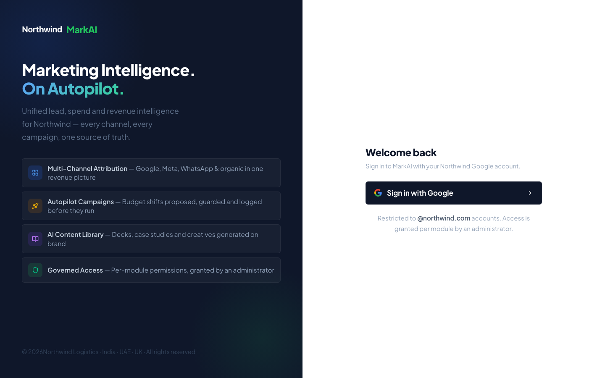
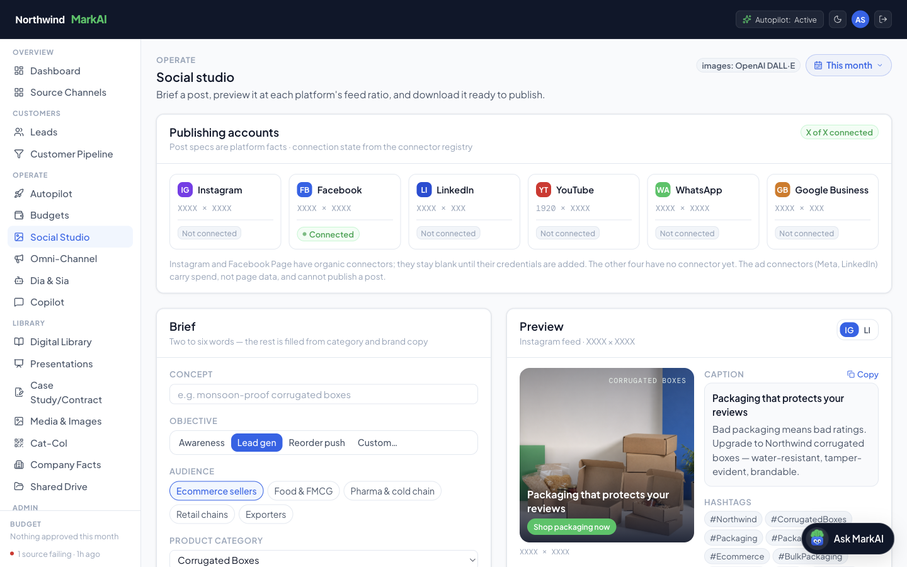
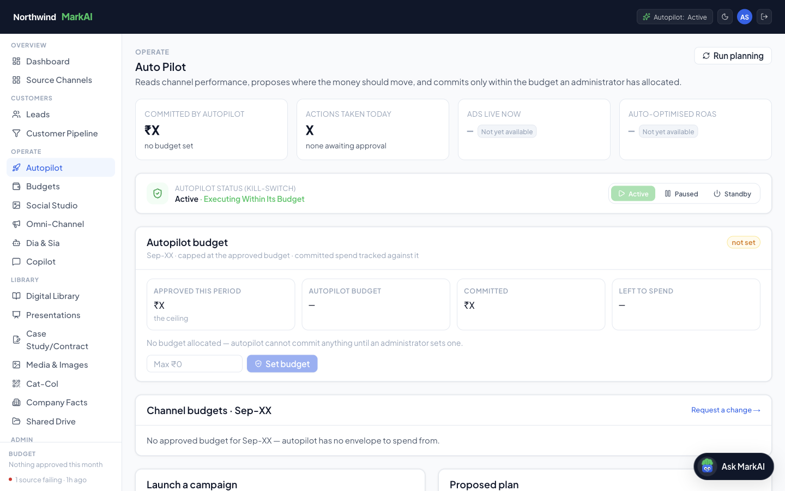
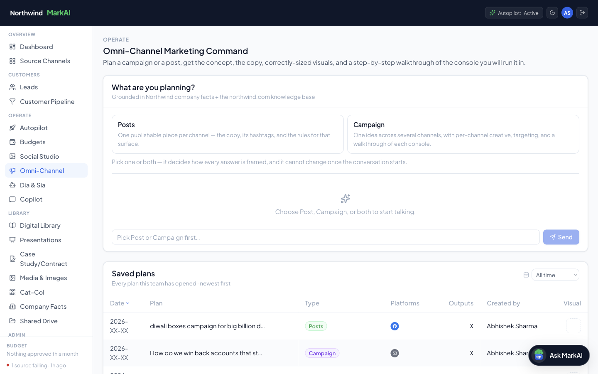

Connected AI operations
7-System AI Ecosystem / MarkAI
Seven connected production systems (lead management, voice, ads, social, lead pipeline, RAG sales knowledge and escalation) running on one shared data layer.
Problem
Lead management, inbound handling, marketing, and customer escalation ran as disconnected manual processes with no shared data layer — high headcount cost, slow response times.
Approach
Architected and delivered seven connected production systems — agentic lead management, voice agents, ad strategy, social automation, global lead pipeline, a RAG sales-knowledge system, and customer escalation.
- 60% operational efficiency gain
- Elimination of 2+ FTE of manual workload
- Started from one shared data layer (Supabase) rather than building seven independent systems — an earlier ecosystem review showed disconnected agents without a shared source of truth cascade into failures.
- n8n orchestrates all seven so logic changes are made once centrally.
- Voice, chat, and RAG systems read from the same lead record.
- Outbound-facing systems launched with human-in-the-loop review before autonomous send.
Live capture. The employer is shown under a fictional brand, Northwind Logistics. Business figures were masked with “X” and company and staff names swapped for generic labels (Client 01, Supplier 01, Sales Rep A) in the page itself, before the screenshot was taken. Nothing was cropped or blurred afterwards.
-

01MarkAI sign-in, the entry point to the marketing layer of the ecosystem. -

02Performance overview: channel results read from the shared data layer. -

03Social Studio, where social content is drafted and reviewed. -

04Autopilot: automated workflows with human review before anything is sent. -

05Omni-Channel: every channel on one lead record.
{kind=link}
{kind=link}
{kind=link}
{kind=link}